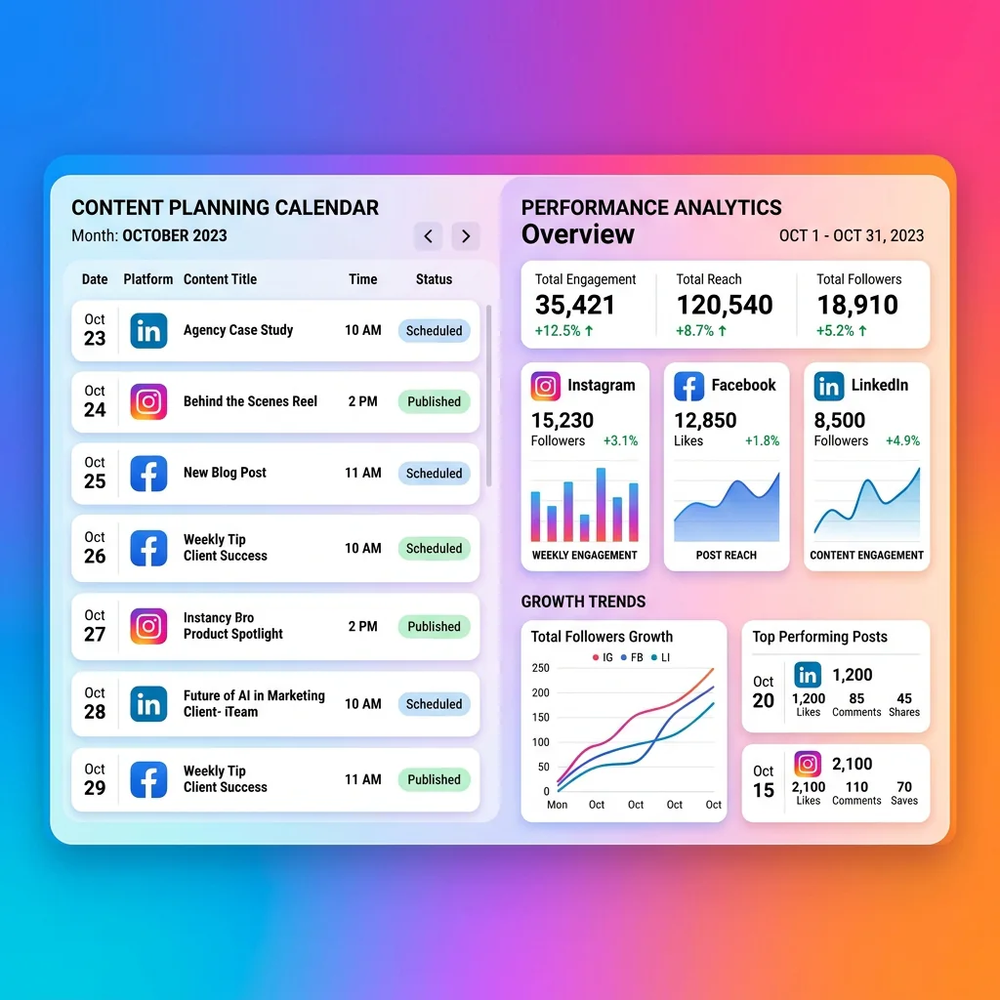

What We Build for TikTok Ads
We shape TikTok campaigns around native creative, fast iteration, and simple conversion paths that match the feed experience.
Short-Form Creative
Hook-first video concepts that feel native, useful, entertaining, and clear enough to drive action.
Rapid Testing
Multiple angles, creators, formats, offers, and CTAs tested quickly so winners can scale.
Sales and Lead Paths
Landing pages, lead forms, retargeting, and pixel events connected to actual campaign goals.

TikTok Ads That Feel Native, Not Forced
TikTok performance depends on creative that earns attention before it asks for action. We build campaigns around fast hooks, useful or entertaining angles, creator-style delivery, and simple conversion paths that make sense after a short-form video view.
- Creative concepts are written for the feed: fast opening, clear problem, believable proof, and direct next step
- Multiple video angles are tested so the campaign is not dependent on one ad doing all the work
- Retargeting connects viewers, profile engagers, site visitors, and cart abandoners to stronger offers
- Landing pages are checked for mobile speed, message match, and low-friction conversion
TikTok Ads We Plan and Manage
We use TikTok for discovery, demand creation, retargeting, and social proof-driven conversion campaigns.
Prospecting Video Campaigns
Cold-audience campaigns built around hooks, interests, broad targeting, creative testing, and fast learning.
- Hook-first scripts
- Creator-style production notes
- Audience and creative tests
Lead Generation Campaigns
TikTok instant forms and landing-page funnels for consultations, trials, bookings, enquiries, and list growth.
- Offer setup
- Qualification questions
- CRM follow-up paths
Ecommerce and Retargeting
Product demos, unboxing-style videos, social proof, catalog campaigns, and retargeting sequences for buyers who need more confidence.
- Pixel and event setup
- Product angle testing
- Cart recovery campaigns
How We Grow TikTok Campaigns
TikTok rewards momentum. We build a repeatable testing system so new ideas keep entering the account before creative fatigue sets in.
Audience and Creative Research
We review competitors, trends, buyer questions, product proof, reviews, and existing short-form content to map testable angles.
Tracking and Offer Setup
Pixel events, lead forms, landing pages, ecommerce events, UTMs, and reporting are prepared before spend begins.
Creative Sprint Launch
We launch multiple concepts with controlled budgets, then compare hooks, watch behavior, click quality, and conversion signals.
Scale, Refresh, Retarget
Winning concepts receive more budget, related variations are produced, and warm audiences are retargeted with stronger proof and offers.
Who TikTok Ads Work Best For
TikTok is strongest when a brand can explain, demonstrate, entertain, educate, or show transformation quickly.
Consumer Products
Beauty, fashion, gadgets, food, home, wellness, and impulse-friendly products with strong visual demonstrations.
Education and Info Offers
Courses, coaching, webinars, communities, and expert-led offers that can teach something useful in a short video.
Younger Audience Brands
Brands targeting younger demographics where authenticity, speed, humor, and behind-the-scenes content influence trust.